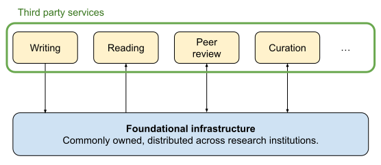
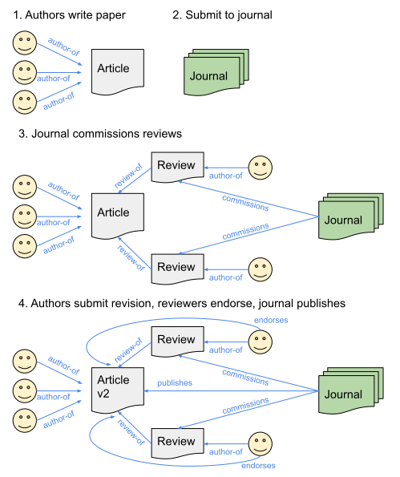

We propose to build a commonly owned foundational publishing infrastructure. A coalition of research institutions will fund and maintain a decentralized database, mirrored across multiple servers. Access will be fully open and free.
Anyone will be free to build new services and models of publishing on top of this foundation. Access to the core data will be free and interoperable, making any content created in one platform available on all others.
Our vision is of a vibrant ecosystem of community run, non-profit and yes, even for-profit organizations building interoperable services using this infrastructure. These might include tools for writing papers, better and more interactive ways of reading articles, new experiments in peer review and curation.
The core database will use a labelled graph data format, rich enough to represent traditional peer review and publishing workflows as well as to experiment with new approaches such as post-publication peer review (which just changes the order that nodes and links are added to the graph).
We know that new experiments in publishing come and go, so why is this one any different? Our strategy is to build a system that from the start is owned and governed by the community it is meant to serve. A system that is flexible enough to serve very different communities, and encourages innovation. A system that will be useful in the short term, while sowing the seeds of a better future.
Initially, Neuromatch Open Publishing will be used for Neuromatch services, and operate as a community-owned enhanced preprint+ server, flexible and responsive to the needs of different groups of researchers. We will work with institutions and third parties, and always with a mission to foster the formation and cohesion of research communities.
We look forward to sharing more with you soon. Please contact us if you would like to get involved. We would particularly love to hear from university libraries and funders interested in creating an open publishing mandate.